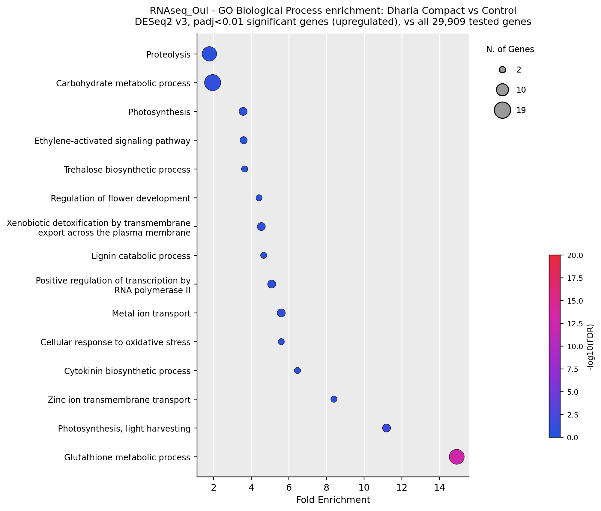
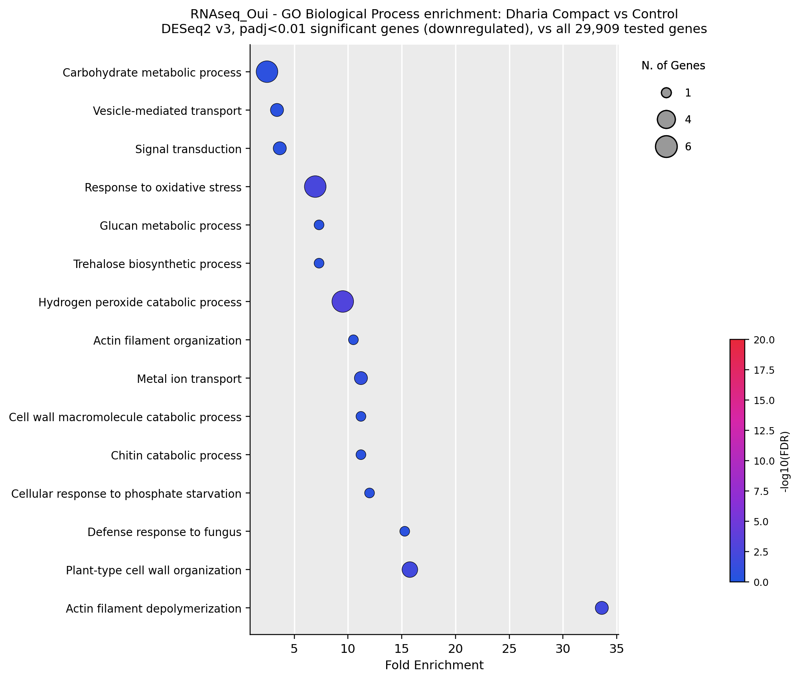
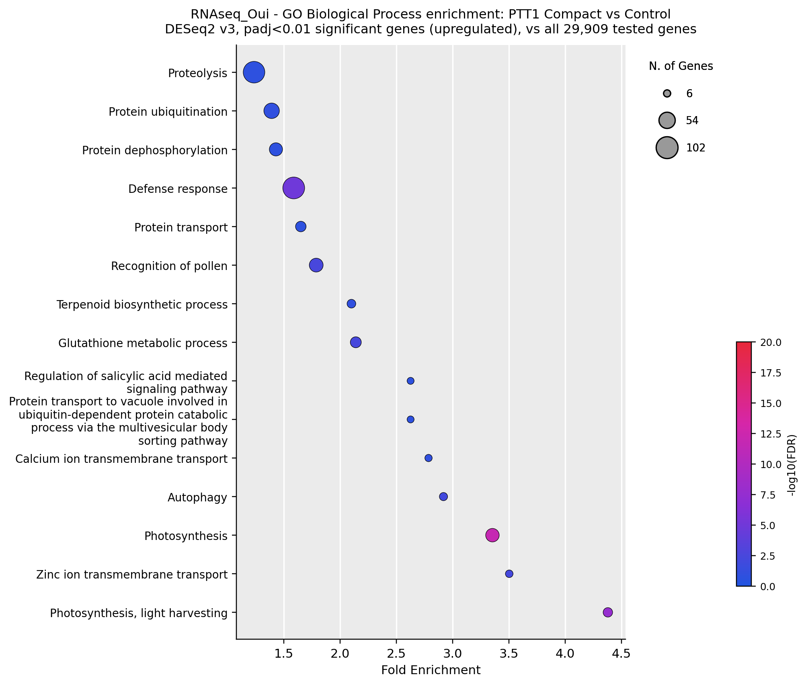
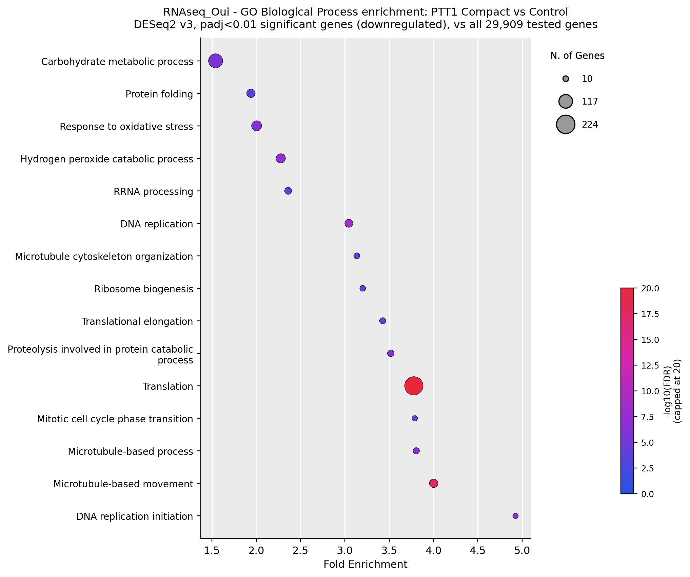

GO Enrichment — Dharia vs PTT1, Compact vs Control
Gene Ontology (Biological Process) over-representation analysis (ORA) on the DESeq2 v3
significant gene lists (padj < 0.01), run separately for each variety and direction:
Dharia Up, Dharia Down, PTT1 Up, PTT1 Down. Each list is tested
against the full set of 29,909 genes DESeq2 evaluated in that contrast (the background/
universe), using a one-sided hypergeometric test — the same statistic
clusterProfiler::enrichGO uses internally. GO annotation source: RAP-DB
IRGSP-1.0 representative annotation (2026-02-05).
Method note: this uses each gene's own directly-annotated GO term only — no
propagation up the GO DAG (parent/child "true path" rule) the way
clusterProfiler::enrichGO normally does with the full ontology graph. Broad
parent terms (e.g. "response to stimulus") are therefore undercounted relative to a standard
run; the terms shown below are the specific, directly-annotated terms and their
Fold Enrichment/FDR are exact for that definition. Color scale is capped at
−log10(FDR) = 20 for visual contrast — a few terms (noted in the CSVs)
are far more significant than that cap shows.
Dharia — Compact vs Control


PTT1 — Compact vs Control


What stands out
- Opposite oxidative-stress direction by variety: Dharia loses "response to oxidative stress" / "hydrogen peroxide catabolic process" under compaction (down), while PTT1 loses the same terms too but from a much larger, translation-dominated shutdown — both varieties down-regulate stress-response machinery, but PTT1's response is buried inside a genome-wide translational slowdown that Dharia does not show at this gene-list size.
- Photosynthesis moves opposite directions between varieties' up-lists: PTT1 Up is dominated by photosynthesis/light-harvesting terms (gaining capacity), while Dharia Up shows only a small photosynthesis-light-harvesting signal (4 genes) next to a much stronger glutathione/detox signature — consistent with Dharia mounting more of a chemical stress-defense response and PTT1 more of a photosynthetic adjustment.
- PTT1's downregulated translation/DNA-replication/microtubule signature (growth machinery broadly suppressed) has no real Dharia counterpart at padj<0.01 — Dharia's much smaller gene lists (713 up / 178 down vs PTT1's 6,830 / 6,072) mean this comparison is also a statistical-power story, not purely biological difference (see the v3 vs v4 comparison page for how much Dharia's replicate count affects its significance calls).
Download
Reproducing this: gene lists = DESeq2 v3 *_Comp_vs_Ctrl_Result.csv,
padj<0.01, split by sign of log2FoldChange. GO terms = RAP-DB IRGSP-1.0 representative
annotation (2026-02-05), Biological Process column, minGSSize=10, maxGSSize=500. Statistic:
hypergeom.sf(k-1, N, K, n), BH-corrected across all terms tested per list. Top
15 terms by FDR are plotted per gene set; the CSVs contain every term that passed the gene-set
size filter, not just the top 15.